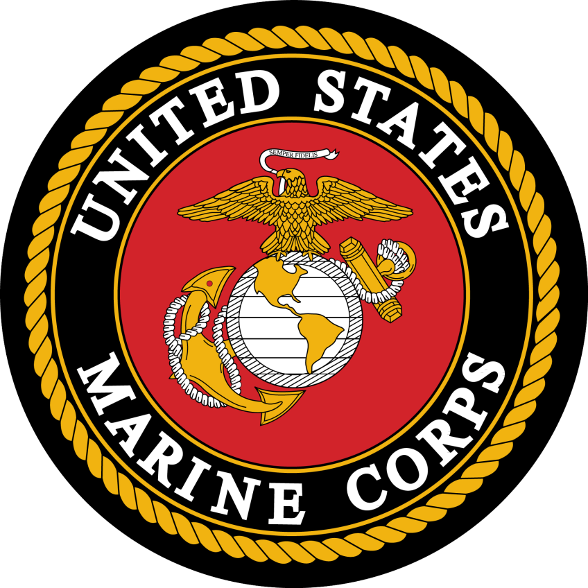

I am currently attending school while studying business management and international fairs. I am also enrolled in the NROTC program as a Marine Corps option.
This brings me too two parts in my future: - Military future - Business futureMy Military Future
After I graduate from the University of Maine my senior year, I will take my oath and be commissioned as a Second Lieutenant in the United States Marine Corps. As a entry level commissioned officer I will be inexperienced and mentored by those senior to me. With the commission, I will now be in charge of a platoon, ranging anywhere from sixteen to forty four marines. My service will be a duration of four to five years in active duty and then I will hopefully embark on a successful business career.

My Business Future
Upon my retirement or joining the reserves of the United States Marine Corps, I will explore my options in the fields of business (my major) or international affairs (my minor). If I decide to lean towards my minor in international affairs there is a strong chance that government work would be open for me due to my education combined with military experience. My other option would be to explore the business world with my degree. One option that I have viewed and am interested in is a position as a star agent, which my degree would qualify me for.